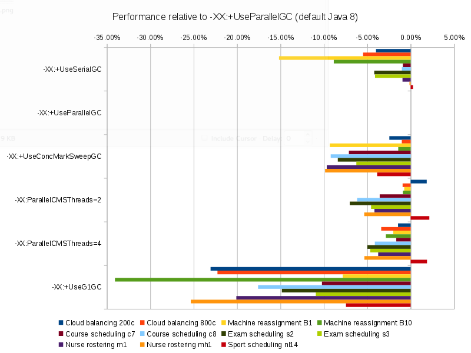

What is the fastest Garbage Collector in Java 8?
OpenJDK 8 has several Garbage Collector algorithms, such as Parallel GC, CMS and G1. Which one is the fastest?
What will happen if the default GC changes from Parallel GC in Java 8 to G1 in Java 9 (as currently proposed)?
Let’s benchmark it.
Benchmark methodology
Run the same code 6 times with a different VM argument (
-XX:+UseSerialGC,-XX:+UseParallelGC,-XX:+UseConcMarkSweepGC,-XX:ParallelCMSThreads=2,-XX:ParallelCMSThreads=4,-XX:+UseG1GC).Each run takes about 55 minutes.
Other VM arguments:
-Xmx2048M -server
OpenJDK version:1.8.0_51(currently the latest version)
Software:Linux version 4.0.4-301.fc22.x86_64
Hardware:Intel® Core™ i7-4790 CPU @ 3.60GHz
Each run solves 13 planning problems with OptaPlanner.
Each planning problem runs for 5 minutes. It starts with a 30 second JVM warm up which is discarded.Solving a planning problem involves no IO (except a few milliseconds during startup to load the input).
A single CPU is completely saturated.
It constantly creates many short lived objects, and the GC collects them afterwards.The benchmarks measure the number of scores that can be calculated per millisecond. Higher is better.
Calculating a score for a proposed planning solution is non-trivial:
it involves many calculations, including checking for conflicts between every entity and every other entity.
To reproduce these benchmarks locally, build optaplanner from source
and run the main class
GeneralOptaPlannerBenchmarkApp.
Benchmark results
Executive summary
For your convenience, I’ve compared each Garbage Collector type to the default in Java 8 (Parallel GC).

The results are clear: That default (Parallel GC) is the fastest.
Raw benchmark numbers
| Garbage Collector | Cloud balancing 200c | Cloud balancing 800c | Machine reassignment B1 | Machine reassignment B10 | Course scheduling c7 | Course scheduling c8 | Exam scheduling s2 | Exam scheduling s3 | Nurse rostering m1 | Nurse rostering mh1 | Sport scheduling nl14 | |
|---|---|---|---|---|---|---|---|---|---|---|---|---|
| 121211 | 102072 | 239278 | 54637 | 10821 | 14370 | 17095 | 10130 | 7389 | 6667 | 2234 | |
| 126248 | 107991 | 282055 | 59944 | 10919 | 14517 | 17843 | 10564 | 7459 | 6676 | 2228 | |
| 123150 | 106889 | 255775 | 59087 | 10142 | 13180 | 16346 | 9903 | 6738 | 6018 | 2142 | |
| 128591 | 106992 | 279968 | 59406 | 10530 | 13621 | 16591 | 10082 | 7148 | 6319 | 2276 | |
| 124415 | 104328 | 276401 | 58234 | 10738 | 13918 | 16952 | 10072 | 7180 | 6320 | 2270 | |
| 97146 | 83952 | 259981 | 39522 | 9803 | 11965 | 15195 | 9410 | 5961 | 4985 | 2062 | |
Dataset scale | 120k | 1920k | 500k | 250000k | 217k | 145k | 1705k | 1613k | 18k | 12k | 4k |
| Garbage Collector | Average | Cloud balancing 200c | Cloud balancing 800c | Machine reassignment B1 | Machine reassignment B10 | Course scheduling c7 | Course scheduling c8 | Exam scheduling s2 | Exam scheduling s3 | Nurse rostering m1 | Nurse rostering mh1 | Sport scheduling nl14 |
|---|---|---|---|---|---|---|---|---|---|---|---|---|
| -4.05% | -3.99% | -5.48% | -15.17% | -8.85% | -0.90% | -1.01% | -4.19% | -4.11% | -0.94% | -0.13% | +0.27% |
| 0.00% | 0.00% | 0.00% | 0.00% | 0.00% | 0.00% | 0.00% | 0.00% | 0.00% | 0.00% | 0.00% | 0.00% |
| -6.23% | -2.45% | -1.02% | -9.32% | -1.43% | -7.12% | -9.21% | -8.39% | -6.26% | -9.67% | -9.86% | -3.86% |
| -2.67% | +1.86% | -0.93% | -0.74% | -0.90% | -3.56% | -6.17% | -7.02% | -4.56% | -4.17% | -5.35% | +2.15% |
| -2.94% | -1.45% | -3.39% | -2.00% | -2.85% | -1.66% | -4.13% | -4.99% | -4.66% | -3.74% | -5.33% | +1.89% |
| -17.60% | -23.05% | -22.26% | -7.83% | -34.07% | -10.22% | -17.58% | -14.84% | -10.92% | -20.08% | -25.33% | -7.45% |
Dataset scale | 120k | 1920k | 500k | 250000k | 217k | 145k | 1705k | 1613k | 18k | 12k | 4k |